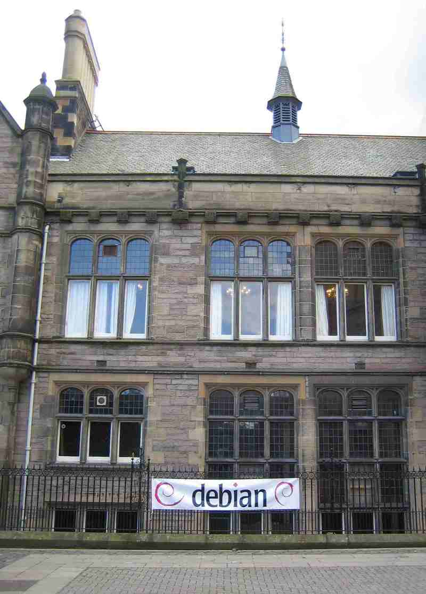

Welcome banner for the 2007 Debconf. Debian is one of the largest engineering teams you've never heard of.
Debian, the big dog of community-based Linux distributions, is used on servers, desktops and embedded devices, and is respected for its power and reliability. Like Wikipedia, it is built by a community rather than a corporation, and was created by a college sophomore in 1993. (The name Debian is a conjunction of his then-girlfriend Debra, and Ian, the founder's first name.)
Ian Murdock, a student at Purdue, wrote in his “Debian Manifesto” that writing an operating system is a job which is too boring for any corporation to do well. Ian was dissatisfied with the quality of the products produced by commercial companies building and selling Linux distributions:
Operating systems are neither easy nor glamorous to construct and require a great deal of ongoing effort from the creator to keep the distribution bug-free and up-to-date: to ensure that the system is easy for others to install, is installable and usable under a wide variety of hardware configurations, contains software that others will find useful, and is updated when the components themselves are improved.This argument is the reverse of the typical argument made about free versus proprietary software. Perhaps some software, like an operating system, is so large and tedious to maintain that no one corporation can do a good job. Whether Ian is right or not, it is true that the free software community can build a good product: Debian is a completely free software distribution which has harnessed an army of 1,000 developers to build a rich and reliable system. There are challenges facing Debian, but none of these challenges relates to the quality of the engineering
At last count, these engineers have incorporated 283 million lines of code. By one metric, the total cost to write the software is $14 billion! Debian sets a high standard for inclusion into their platform, and they have been very influential in making sure that the free software community stays reliable and free. Nobody knows when free software will take over, but much of the code is already written and available in Debian.
Windows and Apple's Macintosh don't get better with more users because those users can't contribute anything technical back. Any conversation between a customer and a Microsoft employee is just an unprofitable distraction from writing and selling new software. To a lesser extent, this is even true with Red Hat and Novell's Linux because most of their development, even of the free versions, is done mostly by full-time employees as their efforts to harness their community of users has long been an afterthought.
Team size is a very important metric, in fact one of the most critical ones. All other things like productivity being equal, the team that has the most engineers will win. The biggest reason why Internet Explorer beat Netscape is that Microsoft created a bigger team.4 A larger team can do more, including absorb new people faster and build up institutional expertise in more areas. The lesson of Metcalfe's law is that the first to achieve critical mass wins: Google, YouTube, Wikipedia.
In 2007, I went to the annual Debian Conference and was very impressed with the strength of the team; many of the attendees were of a similar caliber to my former co-workers at Microsoft, even though they weren't screened via a day-long intensive interview process.
In fact, many of Debian's components are packaged, updated, and maintained by people who are using that component for their personal or professional use. Hewlett-Packard and other companies contribute to Debian to make it work better for their customers, and all have a voice at the table. This perspective which transcends companies and geographies, can lead to a healthy state of affairs.
Debian has governance structures, although their leaders play a very small role in guiding the team in any particular direction. A feature is added simply because someone decides it is a good idea. Details are hashed out in e-mail discussions, blogs and conferences. The person doing the work makes the final decision, which is why free software has been called a Do-ocracy, but the Internet allows him to get questions answered and leverage the expertise of others. Debian's collective expertise in understanding all of the software on its DVD is its greatest asset.
A Debian developer's primary job is to update the many free software components to the latest version and then find and fix interaction bugs between components in the system. Debian does write its own code, but that is a small yet important part of what is actually on a Debian CD.
Debian is a spiritual leader of the free software community and has a very ambitious goal embodied in their motto: to be “The Universal Operating System.” While they have yet to achieve this objective, they have come very close. Debian contains 18,200 software applications that run on 15 hardware platforms and support hundreds of languages.
Debian's biggest mistake so far is that its releases have never truly targeted a desktop operating environment. Their product has shipped every two to three years, which is an eternity in the fast-moving free software world. Long shipment cycles encourage procrastination by contributors, thereby lengthening the release cycle even more.
With software distribution, the ship date is as much a choice of the community as it is a technical limitation. As I wrote earlier, Debian writes little code and ships only stabilized versions of its components. That is why they can ship on any schedule they choose. The latest code could be pushed out every day if you had thorough testing. In fact most Debian developers run the “Debian Unstable” release which is precisely that.
While Debian has till recently had a 2-3 year release cycle, many other free software organizations have moved to more frequent releases, and there haven't been a lot of complaints about decreasing quality. In fact, the faster you release, the faster you can incorporate the latest and greatest code, which is better in every way. Furthermore, frequent releases increase the excitement and discourage procrastination so that bugs get fixed faster.
Debian had the potential to be the “Wikipedia” of Linux distributions, but it hasn't come close to achieving this status. It was one of the most popular Linux distributions in the early years, but it has now fallen far behind the leaders to number seven.
So what happened? Mark Shuttleworth, a former Debian developer who became a dot-com billionaire, decided he wanted his own Linux-based operating system. And so, with $10 million and what is arguably an unethical interpretation of the spirit of free software, created a brand-new Linux distribution system.
Enter Ubuntu – which sat on a platform that was 100% Debian's. Now, with changes and improvements, Ubuntu is 99.9% Debian, and is taking over the Linux distribution market primarily by leveraging the strengths of Debian.